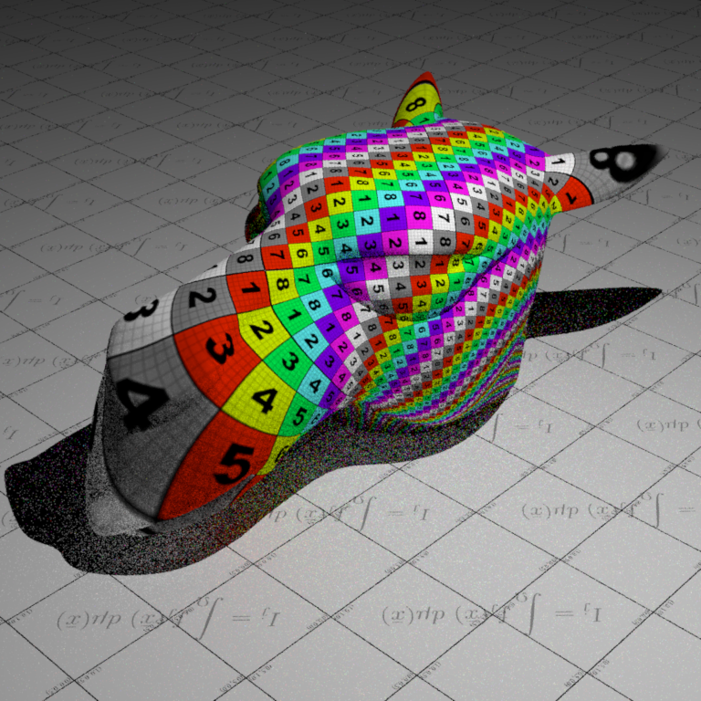
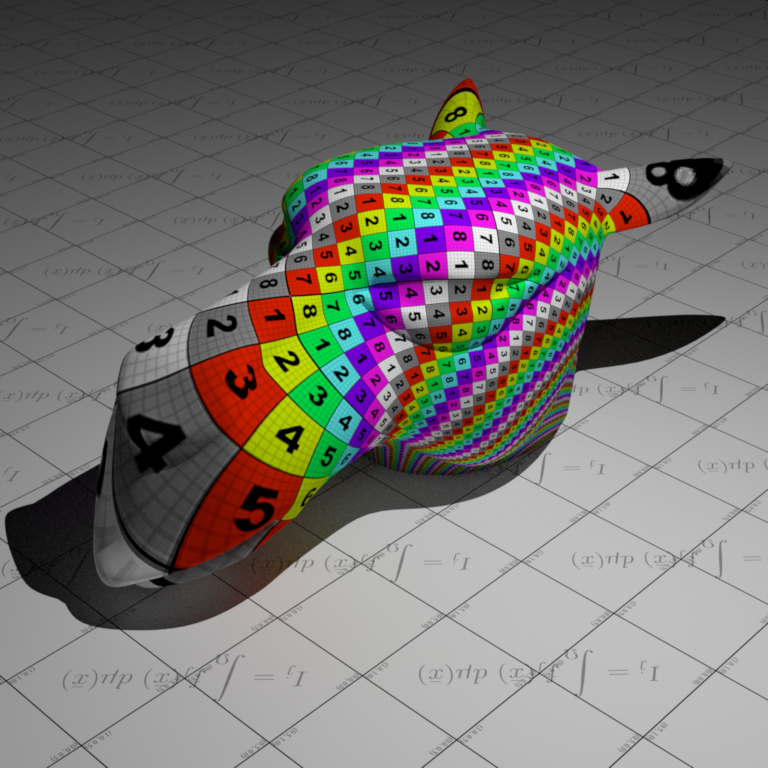
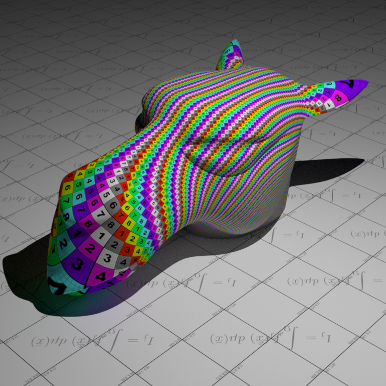

[Back to Index](index.html)
**Nori**
# Features -- Textures
## Images as Texture
### Description
**Files created or modified**:
- `include/nori/lodepng.h`: downloaded from [lodepng](https://github.com/lvandeve/lodepng/tree/master)
- `src/lodepng.cpp`: downloaded from [lodepng](https://github.com/lvandeve/lodepng/tree/master)
- `src/imagetexture.cpp`
**Validation scenes**:
- `scenes/nori-beyond/image_texture/mesh-image-texture.xml`
- `scenes/nori-beyond/image_texture/mesh-image-texture-mitsuba.xml`
This feature enables the use of PNG images as textures to replace constant albedo colors on objects in the scene. A new texture type `ImageTexture` is implemented in `imagetexture.cpp`. The texture supports tiling and scaling.
The standard texture mapping pipeline includes scene definition -> texture loading at startup -> ray intersection -> UV coordinate interpolation -> texture lookup -> colour / material evaluation. To breakdown the implementation, the following details the pipeline:
1. Image texture loading at startup: An image loader would be needed to parse the image file in order to handle decompressing data, convert to RGB format, etc.
2. Ray intersection: When a ray hits a mesh triangle, I would need to get the barycentric coordinates of the hit point within the triangle `bary_coordinates`.
3. UV coordinate interpolation: The 3D mesh has UV coordinates stored per vertex, normalized to $[0, 1]$. For example, `Point2f uv0 = m_UV.col(v0)` is the UV coordinates at vertex 0. Using `bary_coordinates`, I can interpolate the UV coordinates: `its.uv = bary_coordinates.x() * uv0 + bary_coordinates.y() * uv1 + bary_coordinates.y() * uv2`. This part and the previous two parts are already handled in nori.
4. Texture lookup: I need to loopk up the colour in the loaded texture data. This consists of first converting the UV coordinates ($[0, 1]$) to pixel coordinates ([width, height]), then looking up the image loader data.
5. Colour/Material evaluation: This is implemented in the BSDF `eval` methods (e.g. `Diffuse`'s `eval` method calls `m_albedo->eval(bRec.uv)`). Finally, the BSDF value is evaluated with `bsdf->eval(bRec)`.
For the image loader, I searched for commonly used ones and were deciding between [lodepng](https://github.com/lvandeve/lodepng) and [stb_image](https://github.com/nothings/stb). I decided to use lodepng since I only need PNG support and that it has separate compilation and has automatic memory management.
For the PNG image loading, I first construct the flattened 1D array `m_data` in which each entry is a Color3f, for memory efficiency.
#### `ImageTexture::eval(...)`
Given the UV coordinates on the 3D surface, this method should find the corresponding pixel in the image texture, and return its RGB colour.
First, apply the tiling and scaling by computing the fractional part of the scaled UV coordinates
```
float img_u = std::fmod(uv.x() * m_scale.x(), 1.0f);
float img_v = std::fmod(uv.y() * m_scale.y(), 1.0f);
```
For example, if `uv = (0.75, 0.75)` and `m_scale = (2.0, 2.0)`, then after scaling, I get `(1.5, 1.5)` which is beyond $[0, 1]$ and I are in the second repetition, so I subtract by $\lfloor 1.5 \rfloor = 1$ to get $(0.5, 0.5)$, which means that at surface point $(0.75, 0.75)$ I sample texture from $(0.5, 0.5)$, because the texture is repeated twice.
Next, convert the UV coordinates to pixel coordinates by scaling `img_u` by `m_width` and `img_v` by `m_height` and trancating to integer pixel index. For the V coordinate, I need to flip the axis because in the image storage, row 0 is at the top of the image but V = 0 is at the bottom of the texture. Then I clamp the bounds to prevent the pixel coordinates being negative or going beyond the last column or row.
Finally, convert from 2D to 1D array index to look up the RGB value from `m_data` which I constructed.
### Validation
For the validation scenes, I reuse the scene `mesh-texture` from assignment 1



## Normal mapping
Normal mapping replaces the shading normal with a normal sampled from a texture (RGB image). The texture stores perturbations of the normal direction. This feature is discussed in [chapter 10.5.3 of the PBR book](https://www.pbr-book.org/4ed/Textures_and_Materials/Material_Interface_and_Implementations#NormalMapping).
### Description
**Files created or modified**:
- `src/normalmap.cpp`
- `include/nori/bsdf.h`
- `src/diffuse.cpp`
- `src/mesh.cpp`
**Validation scenes**:
- `scenes/nori-beyond/normal_mapping/mesh-normal-map.xml`
- `scenes/nori-beyond/normal_mapping/mesh-no-normal-map.xml`
- `scenes/nori-beyond/normal_mapping/mesh-normal-map-mitsuba.xml`
- `scenes/nori-beyond/normal_mapping/mesh-no-normal-map-mitsuba.xml`
The current rendering pipeline follows ray generation -> ray-scene interaction -> `mesh.cpp::setHitInformation` which fills in `its` -> integrators to compute radiance. The `NormalMap` texture would return the `Normal3f` at a given UV coordinate in the 3D surface. We need to modify `mesh.cpp::setHitInformation` so that `its.shFrame` is the perturbed frame according to the normal map.
#### `src/normalmap.cpp`
A new texture `NormalMap` is implemented in `normalmap.cpp`. Normal maps are stored in the tangent space (aligned with per-vertex tangent, bitangent, normal) using `(R, G, B) = (nx, ny, nz)` with each component in $[0, 1]$. Since real normals are in $[-1, 1]$, the PBR book decodes them by `x = 2 * r - 1`, and correspondingly for `y` and `z`. After that, we store the `Normal3f(x, y, z)` into `m_data`. In `include/nori/frame.h`, the `Frame` class defines `s` and `t` as tangent vectors and `n` as the normal and the key transformation method is:
```
Vector3f toWorld(const Vector3f &v) const {
return s * v.x() + t * v.y() + n * v.z();
}
```
which is a standard right-handed coordinate frame with no special tangent convention defined. So for normal maps with OpenGL format, we pass through `(x, y, z)` which will be mapped to `(s, t, n)` and for normal maps with DirectX format, we pass `(x, -y, z)` since DirectX conventions have Y pointing down. Other than this detail and that the final returned `Normal3f` should be normalized, the implementation of `eval` is the same as as that in `ImageTexture`.
#### `include/nori/bsdf.h`
We added the method `getNormalMap()` which returns `true` if the BSDF has a normal map. We need to add this method because image textures are stored in `m_albedo` within the BSDF (`diffuse.cpp::addChild()`), and then the `sample` method uses it. However, since we need to modify `its.shFrame` inside `mesh.cpp::setHitInformation`, it must access `m_normalMap`.
#### `src/diffuse.cpp`
To use the normal map, we need at least one BSDF that stores it. We use the diffuse BSDF. For each instance where `m_albedo` appears, we also add `m_normalMap`. This includes the constructor, destructor, `addChild()` and `toString()`. In addition, we also implement the `getNormalMap()` override to return the normal map so the mesh can retrieve it.
#### `Mesh::setHitInformation()`
After interpolating base normal from mesh, we need to query BSDF for the normal map using `getNormalMap()`. If normal map exists, we evaluate the normal map at `its.uv` to get the tangent-space normal. Then we compute the tangent frame from UV gradients and transform the normal to world space. Then we update `its.shFrame` with the perturbed normal. In [detail](https://www.pbr-book.org/4ed/Textures_and_Materials/Material_Interface_and_Implementations#NormalMapping), we first read the normal map $\mathbf{n}_s = (n_x, n_y, n_z)$ using `Normal3f mappedNormal = normalMap->eval(its.uv)`, where `eval` was implemented in `normalmap.cpp`.
Let the triangle vertex positions be $\mathbf{p}_0, \mathbf{p}_1, \mathbf{p}_2 \in \mathbb{R}^3$ and the triangle UVs be $\mathbf{u}_0, \mathbf{u}_1, \mathbf{u}_2 \in \mathbb{R}^2$. We define $\Delta \mathbf{p}_1 = \mathbf{p}_1 - \mathbf{p}_0$, $\Delta \mathbf{p}_2 = \mathbf{p}_2 - \mathbf{p}_0$, $\Delta \mathbf{u}_1 = \mathbf{u}_1 - \mathbf{u}_0$, $\Delta \mathbf{u}_2 = \mathbf{u}_2 - \mathbf{u}_0$. We want $\mathbf{p}_u, \mathbf{p}_v$ solving the $2 \times 2$ linear system coming from
$$
\begin{align*}
\Delta \mathbf{p}_1 &= \mathbf{p}_u \Delta \mathbf{u}_{1_u} + \mathbf{p}_v \Delta \mathbf{u}_{1_v} \\
\Delta \mathbf{p}_2 &= \mathbf{p}_u \Delta \mathbf{u}_{2_u} + \mathbf{p}_v \Delta \mathbf{u}_{2_v}
\end{align*}
$$
Equivalently,
$$
\begin{bmatrix}\Delta \mathbf{p}_1 & \Delta \mathbf{p}_2\end{bmatrix} = \begin{bmatrix}\mathbf{p}_u & \mathbf{p}_v\end{bmatrix}\begin{bmatrix}\Delta \mathbf{u}_{1_u} & \Delta \mathbf{u}_{2_u} \\ \Delta \mathbf{u}_{1_v} & \Delta \mathbf{u}_{2_v}\end{bmatrix}
$$
Solving for $\begin{bmatrix}\mathbf{p}_u & \mathbf{p}_v\end{bmatrix}$ by inverting the $2 \times 2$ UV matrix, the determinant is
$$
\Delta = \Delta \mathbf{u}_{1_u} \Delta \mathbf{u}_{2_v} - \Delta \mathbf{u}_{1_v} \Delta \mathbf{u}_{2_u}
$$
If $\Delta \neq 0$, the inverse yields the closed form
$$
\mathbf{p}_u = \frac{\mathbf{u}_{2_v}\mathbf{p}_1 - \mathbf{u}_{1_v}\mathbf{p}_2}{\Delta}, \quad \mathbf{p}_v = \frac{-\mathbf{u}_{2_u}\mathbf{p}_1 - \mathbf{u}_{1_u}\mathbf{p}_2}{\Delta}
$$
If $|\Delta| \leq \varepsilon$, the UV mapping is degenerate (no well-defined mapping), so we fall back. Next we Gram-Schmidt the tangent. We set `Vector3f n = its.shFrame.n;`, then to compute $t$, we project $\mathbf{p}_u$ on to normal $\mathbf{n}$ by $\text{proj}_\mathbf{n}(\mathbf{p}_u) = (\mathbf{n} \cdot \mathbf{p}_u)\mathbf{n}$. Then remove the normal component
$$
\tilde{\mathbf{t}} = \mathbf{p}_u - \text{proj}_\mathbf{n}(\mathbf{p}_u) = \mathbf{p}_u - (\mathbf{n} \cdot \mathbf{p}_u)\mathbf{n}
$$
and normalize it. Then compute bitangent as cross product: $\mathbf{b} = \mathbf{n} \times \mathbf{t}$. Then we do a linear change-of-basis from tangent-space coordinates $\mathbf{n}_s$ to world coordinates using the TBN matrix $\begin{bmatrix}\mathbf{t} & \mathbf{b} & \mathbf{n}\end{bmatrix}$:
$$
\mathbf{n}_\text{world} = n_x \mathbf{t} + n_y \mathbf{b} + n_z \mathbf{n}
$$
and normalize it. Then, we replace the shading normal used for shading with the perturbed normal $\mathbf{n}_\text{world}$. The new shading frame is constructed from $\mathbf{n}_\text{world}$.
For the fallback branch (degenerate UV) or if there is no UV, we cannot reliably compute $\mathbf{p}_u, \mathbf{p}_v$ from UV, so we use the preexisting tangent frame.
### Validation
The materials used for validation are downloaded from [ambientCG](https://ambientcg.com):
Bark Color Map
Bark Normal Map
Ground Color Map
Ground Normal Map
**Comparison: Bark and Ground Material With and Without Normal Maps**